Learning to Forecast and Refine Residual
Motion for Image-to-Video Generation
1Rutgers, The State University of New Jersey, Piscataway, USA
2Binghamton University - State University of New York (SUNY), Binghamton, USA
Abstract:
We consider the problem of image-to-video translation, where an input image is translated into an output video containing motions of a single object. Recent methods for such problems typically train transformation networks to generate future frames conditioned on the structure sequence. Parallel work has shown that short high-quality motions can be generated by spatiotemporal generative networks that leverage temporal knowledge from the training data. We combine the benefits of both approaches and propose a two-stage generation framework where videos are generated from structures and then refined by temporal signals. To model motions more efficiently, we train networks to learn residual motion between the current and future frames, which avoids learning motion-irrelevant details. We conduct extensive experiments on two image-to-video translation tasks: facial expression retargeting and human pose forecasting. Superior results over the state-of-the-art methods on both tasks demonstrate the effectiveness of our approach.
Paper:
Learning to Forecast and Refine Residual Motion for Image-to-Video Generation.
Long Zhao, Xi Peng, Yu Tian, Mubbasir Kapadia, Dimitris Metaxas.
In Proceedings of the 15th European Conference on Computer Vision (ECCV), 2018.
Facial Expression Retargeting
Examples of facial expression retargeting using our algorithm on the MUG Facial Expression Database [1]. We show three expressions as an illustration, from top to bottom: happiness, disgust and surprise. The reference videos are highlighted in green, while the generated frames are highlighted in red.
Happiness
 Disgust
 Surprise
 Human Pose Forecasting
Visual comparison of our method with Villegas et al. [2] on the Penn Action Dataset [3]. Examples are sampled from six different action categories: baseball, clean and jerk, golf swing, jump rope, jumping jacks, and tennis respectively.
Baseball
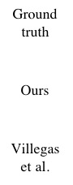 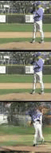 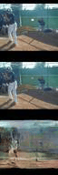
 Clean and Jerk
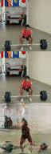
 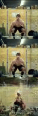 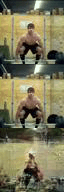  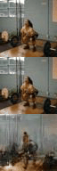 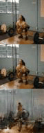Golf Swing
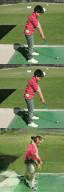 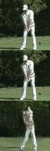
 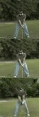 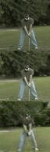Jump Rope
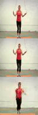 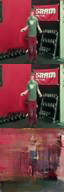 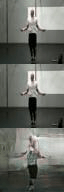 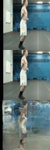 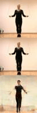 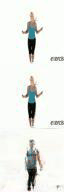 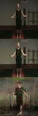 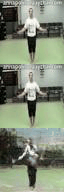
Jumping Jacks
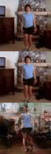 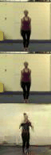 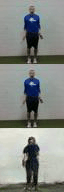 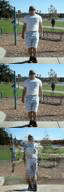 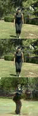 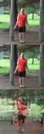 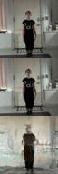
Tennis
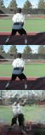 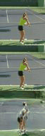
References:
[1] Aifanti, N., Papachristou, C., Delopoulos, A.: The MUG facial expression database. In: International Workshop on Image Analysis for Multimedia Interactive Services (WIAMIS), 2010.
[2] Villegas, R., Yang, J., Zou, Y., Sohn, S., Lin, X., Lee, H.: Learning to generate longterm future via hierarchical prediction. In: International Conference on Machine Learning (ICML), 2017.
[3] Zhang, W., Zhu, M., Derpanis, K.: From Actemes to Action: A Strongly-supervised Representation for Detailed Action Understanding. In: IEEE International Conference on Computer Vision (ICCV), 2013.
|